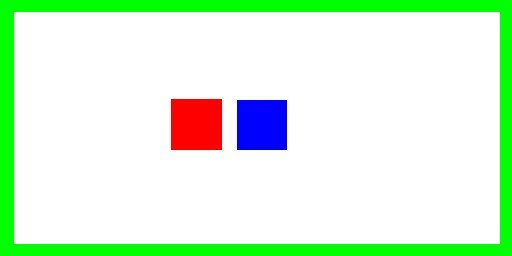

wren % atlc very-odd.bmpatlc would produce the following output.
very-odd.bmp Er= 1.0000 C= 59.1756 pF/m L= 188.0251 nH/m Zo= 56.3685 Ohms Zodd= N/A Ohms Zeven= N/A Ohms v= 2.99792e+08 m/s v_f= 1.0000 VERSION= 4.0.0All information is printed on one long line so its easy to process with other software. Note the impedance Zo is 56.3685 Ohms. Ignore the columns marked Zodd and Zeven. All the others should be self expanatory, except Er which is the effective permittivity and v_f which is the velocity factor.
The size (number of pixels) in the bitmap should be sufficient that the structure can be drawn accurately, but not so large that it takes too long to process. About 1 Mb is reasonable.
atlc can be used too. We are not suggesting that atlc is used instead of the normal formula for coax on a regular basis, but since it's a simple example, it is useful for demonstration. Also, as there is an analytical expression for Zo, we can get some idea of the accuracy of atlc
Since the cross section consists of a circular conductor inside another circular conductor, the programme
circ_in_circ can be used to generate the bitmap, rather than the more time consuming procedure of using a graphics package and drawing it manually.. We will assume that the inner diameter of the outer conductor is 12 mm, the outer diameter of the inner conductor is 3.9 mm, and the dielectric has a permittivity of 1.0. Since the conductors are coaxial, there is zero offset between their centres.. The programme circ_in_circ will be used to generate the bitmap, with these physical dimensions
If we run
circ_in_circ without any arguments, it will print a usage message, showing the first argument should the the outer diamater (D=12 mm), the second the inner conductor (d=3.9 mm), the third the offset 'O' between the conductors (O is zero since they are coaxial and there is therefore no offset between centres). The fourth argument is the permittivity (1.0 in this case).
Ignoring the options, which are not necessary unless we wish to change the behaviour of circ_in_circ, we would type
% circ_in_circ 12 3.9 0 1.0 > coaxial_1.bmp
This will produce a bitmap like the image on the left. The inner conductor is red, the outer green and the dielectric is white in this case, as Er=1.0. Don't worry about the fact that the outer conductor is square, as the inside of it is round, which is all that matters.

To calculate the properties of this coaxial cable, we then run
atlc, where it will print the important properties to the screen, again on one long line (you will have to scroll the brower to see it all).
% atlc coaxial_1.bmp coaxial_1.bmp Er= 1.0000 C= 49.5449 pF/m L= 224.5743 nH/m Zo= 67.3257 Ohms v= 2.99792e+08 m/s v_f= 1.0000 VERSION= 3.0.0
The correct answer, given by the formula Zo=loge(D/d)/sqrt(Er) is 67.4358 Ohms, so atlc's estimate of Zo= 67.3257 Ohms is in error by only 0.16%. We can easily increase the accuracy, by generating a larger bitmap with
circ_in_circ, by adding a -b command line option.
The outer conductor needs only to be 2 pixels thick. Drawing a few more is usually benificial, as otherwise they can be hard to see. Do not make it too thick (say more than 30 pixels) as it will start to slow the atlc.
Once the bitmap is drawn, atlc is used to process the bitmap.
% atlc rect9.bmpwhich produces the output
rect9.bmp Er= 2.5000 C= 220.2036 pF/m L= 126.3206 nH/m Zo= 23.9511 Ohms Zodd= N/A Ohms Zeven= N/A Ohms v= 1.89605e+08 m/s v_f= 0.6325 VERSION= 4.0.0Although drawning that would not be hard in the Gimp, Photoshop or whatever, it is even easier to used
rect_cen_in_rect to generate the bitmap, giving it the 4 dimensions in the order W H w h and the permittivity
% rect_cen_in_rect 10 7 2 5 2.5 > rect10.bmp % atlc rect10.bmpIn order to understand how to use rect_cen_in_rect (or any other programme for that matter), we should run it with no arguments, to get a list of the paramters it needs and any options it may have.

This time, since this is a coupler, the second inner conductor must be drawn pure blue. Coupled lines are quite a complex suhject, but the important properties to know are the odd and even mode impedance, Zodd and Zeven. Again atlc is used to determine these.
% atlc cop1.bmpatlc responds, but this time giving both the odd mode impedance, the even mode impedance and the characteristic impedance Zo.
cop1.bmp Er= 1.0000 C= 23.9983 pF/m L= 463.6373 nH/m Zo= 66.3699 Ohms Zodd= 31.6915 Ohms Zeven= 138.9950 Ohms v= 2.99792e+08 m/s v_f= 1.0000 VERSION= 4.0.0The characteristic impedance Zo is the square root of the odd and even mode impedances. Zo=sqrt(Zodd*Zeven)=sqrt(31.6915*138.9950)=66.3699 The voltage coupling factor c is defined as c=(Zeven-Zodd)/(Zeve+Zodd)=0.628658 = 4.03 dB.
Later version of atlc will include some software to make use of the impedance values to calculate the properties of a directional coupler, although you should be able to use these in the free versions of spice or pspice. I have not tried that I must admit. There is also a cheapish ($10) programme called Puff available from http://www.its.caltech.edu/~mmic/puffindex/puffE/puffE.htm . That would certainaly allow such calculations. There's a Unix verison too at http://wwwhome.cs.utwente.nl/~ptdeboer/ham/puff.html. Puff is very good. A combination of atlc to find the electrical properties (Zo, Zodd Zeven etc) of transmission lines and Puff to simulate the properties (coupling factor, directivity, frequency response etc) given those parameters, should be very useful.
atlc is written and supported by Dr. David Kirkby (G8WRB) It it issued under the GNU General Public Licence